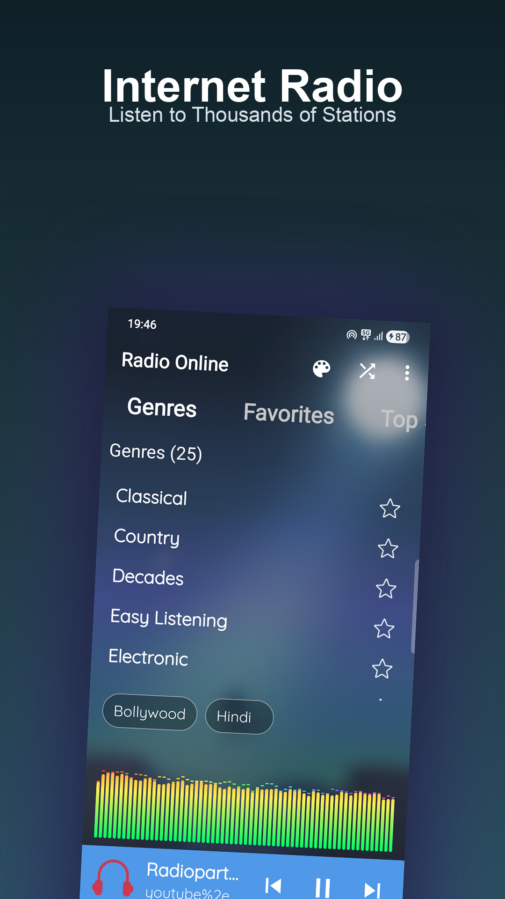
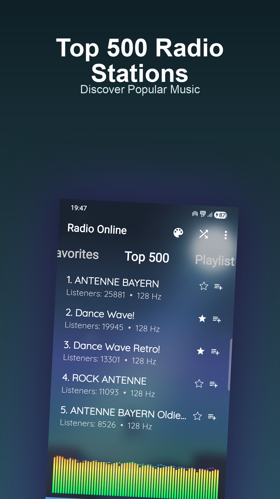
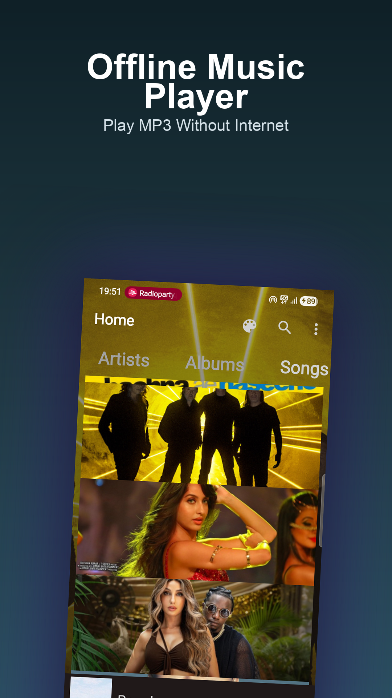
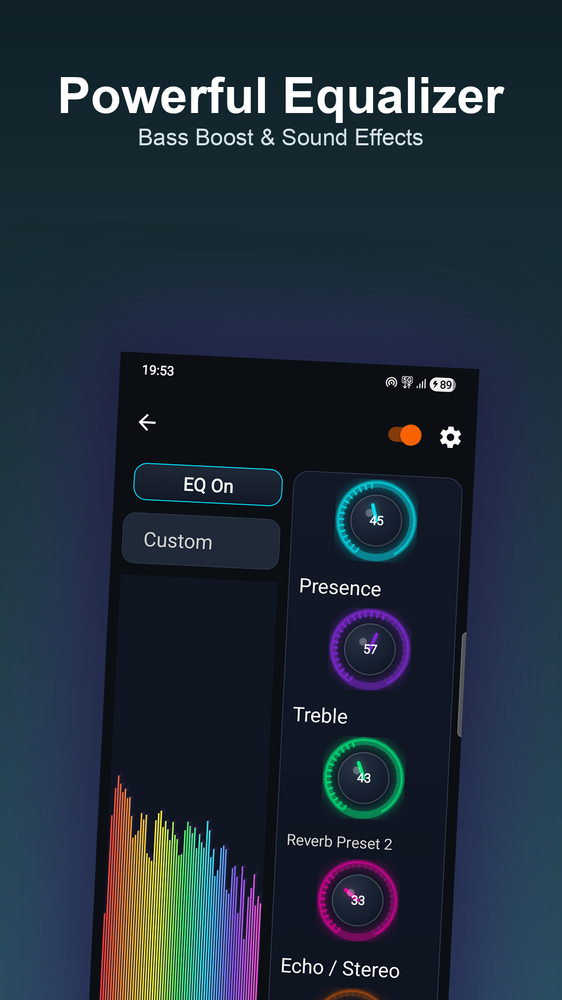
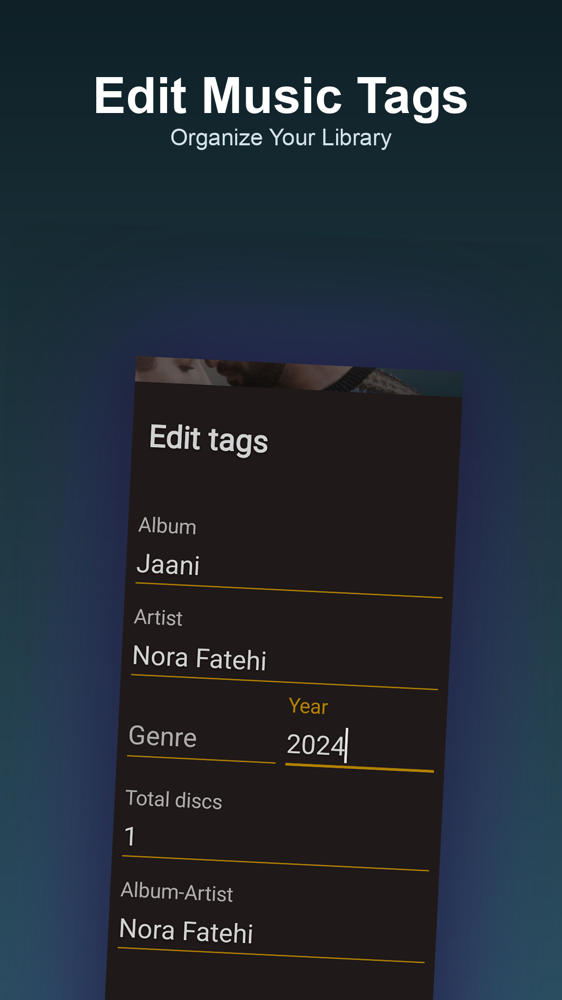
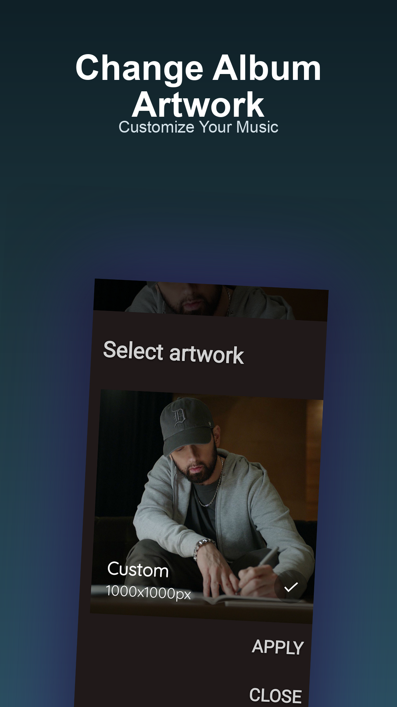
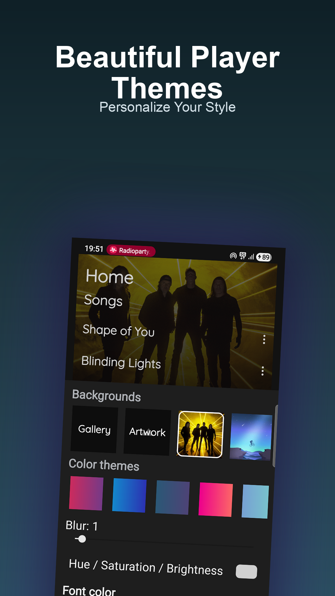
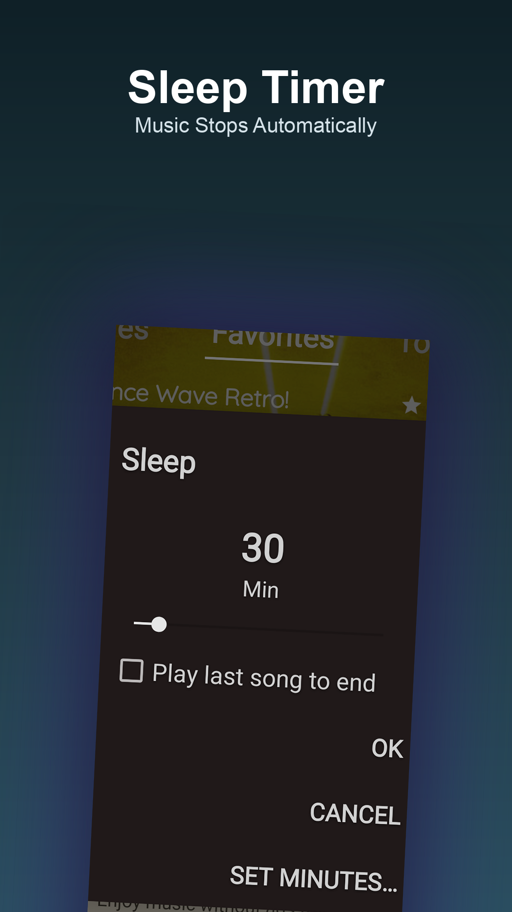

Offline Music Player with Radio Streaming for Android
Play your music collection or stream thousands of radio stations worldwide
Ultimate Music Player is designed for users who want a powerful offline music player combined with internet radio streaming.
Enjoy your local music collection without needing an internet connection while also discovering new music through thousands of radio stations worldwide.
Discover radio stations from around the world directly inside the app.
Listen to live broadcasts anytime with smooth and reliable streaming.
Enhance your listening experience using built-in audio tools.
Organize your music library with built-in editing tools.
Personalize the appearance of your music player using customizable themes.
The built-in sleep timer automatically stops music playback after a selected time.
Enjoy offline music playback and global radio streaming on Android.
Download on Google Play






